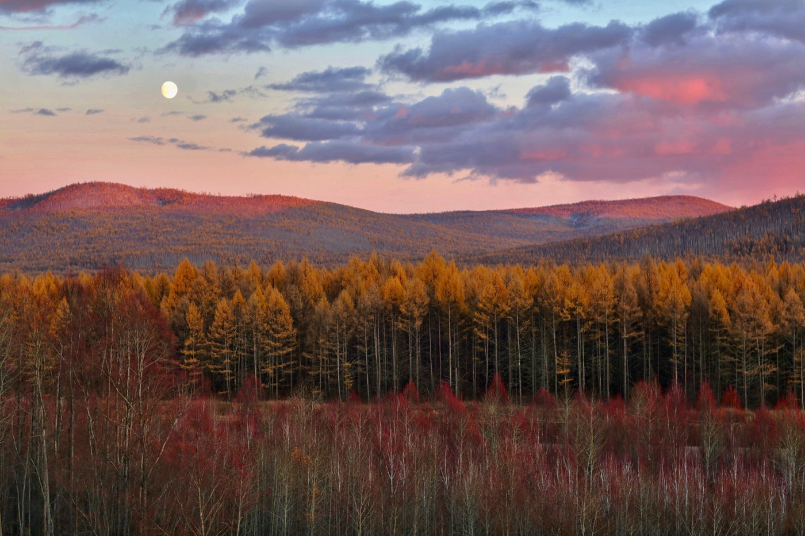

PHOTO CREDIT
大兴安岭的秋天
照片拍摄于根河湿地附近，用作区域秋色参考，并非本次路线的沿途实拍。

摄影：Charlie fong · 2017 年 10 月 3 日
许可：Creative Commons Attribution-ShareAlike 4.0 ↗
本站将原图缩小至 1400 像素宽，并在行程卡片中以 CSS 裁切展示；未改变图像内容。本站所用图片及其缩放、裁切版本继续遵循 CC BY-SA 4.0。此许可仅适用于该照片，不自动扩展至网站其余内容。